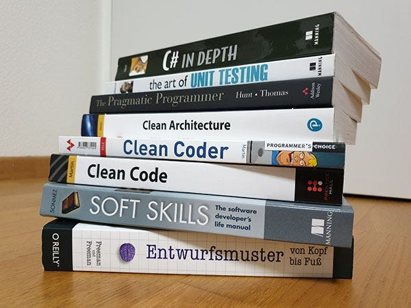
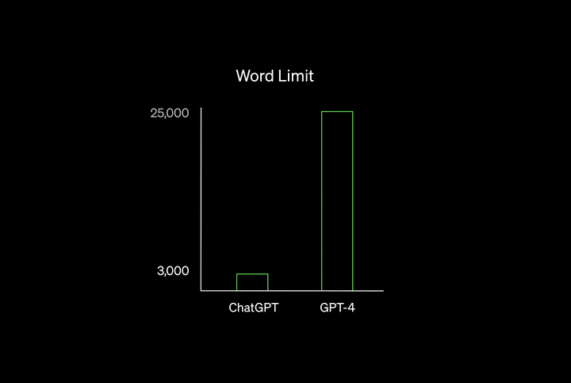
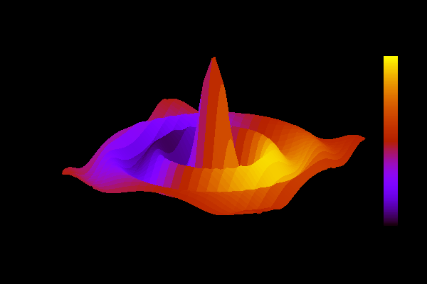
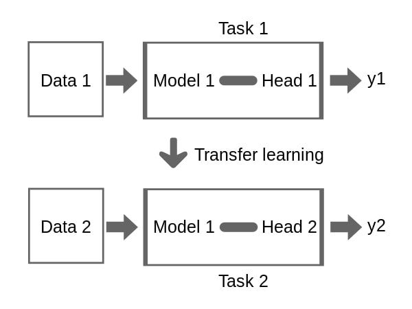
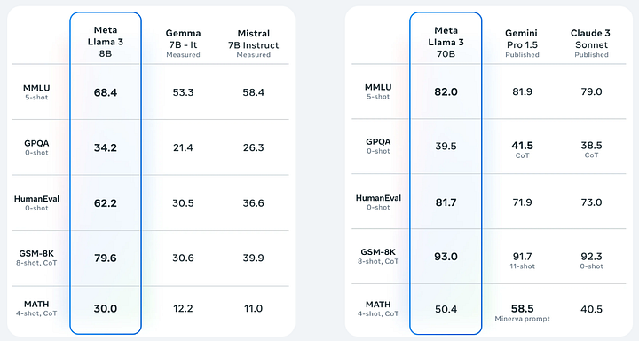

Google since its inception had always tried to tame the internet into a neat search bar. They created the PageRank Algorithm using keywords, back links and meta data. And for a while it worked.
The problem-too many companies and bloggers vyed for rankings on Google search. Content producers had figured out how to game the system for top spots.
The cash cow algorithm for Google search had become unreliable. We needed a better solution and the interweb was too saturated.
In 2014 Google introduced a deep learning solution-RankBrain. Instead of keywords and back links we use deep learning to analyze the content itself. Google wanted a search engine that can no longer be gamed. Instead of being dependent on any one factor-it is based on the content as a whole.
Photo by Trainor
RankBrain has the ability to read your web page and spit out metrics for page ranking. The architecture is not disclosed and I'll be honest...
RankBrain sucks.
Since 2014 all search engines have been in decline. We can't get what we want anymore. We can spend hours "engineering a prompt" for Google just to be unable to get what we want.
Would going back to PageRank be a good idea? Maybe, maybe not. But the reality is we need a solution. In fact we needed a solution for years.
Then suddenly in November 2022 an unknown company, OpenAI, releases a language model. A viral campaign starts where the model is able to answer questions no one could find. Not only that-it is accurate and detailed.
Since then we have been enamored with language models. they have become the de facto standard of research and coding. Language models since then are the new search engine.
They scour the internet and consume all content-training a mathematical formula. Its not even intelligent. Its just calculus. We humans have artificially created intelligence using calculus.
Pretty bonkers right?
In the old days coding was learned from colleges. Then soon after coding was learned from published textbooks. Years later the advent of internet gave us free information. We learned from the search engine.
Photo by Naina Chaturvedi
And now here we are. Language models are not replacing us. We are taking over language models. They are how we learn programming and stay productive.
Introduction to prompt engineering
In late 2022 language models were unrefined. They were new and on their maiden voyage. We still needed to give them the right details-the right words for right response. That is prompt engineering. To rewrite prompts and try to get the language model to say an answer.
But-we don't need prompt engineering for higher quality models. Prompt engineering exists for smaller models on limited hardware. Or-new untested models.
Photo by Trusted Reviews
In 2023 I tried ChatGPT 3.5. I thought it was the best thing in the world. All I had to do was fiddle with my prompt and I got an answer. The endless fiddling I did with Google search led to nothing. At least ChatGPT 3.5 gave me an answer.
In 2024 I tried ChatGPT 4. Once again I thought it was the best thing in the world. But this time I didn't even need to fiddle. I no longer needed all those prompt engineering techniques I had learned in 2023.
Why don't I need prompt engineering?
Because the model was the highest quality around. It could readily understand proper English. It required no clarification and responses with clear concise answers.
Today if you are using a language model you will need prompt engineering techniques for lower quality models. But for the best out there-you just need good logic and good English.
When to ask a language model questions
Always. Don't think about it. Language models are the new search engine. Its not SkyNet alright? Its just plain calculus. We take in words, we convert to numbers, we do math.
But code... Aww man code. We have a new solution to learning everything under the sun. And it is not an advantage if we use it. It's a disadvantage if we don't use it.
Everyone is using it. Search engines don't work. Without it you have no answers. If you are not here with language models-you are not anywhere.
Stack Overflow has conceded to Chat-GPT. They died in 2023. All data belongs to AI now. They are your overlords. Keeper of questions and answers.
Nothing passes by without being in a language model and this is preferred.
Treat the models like a personal tutor
The models today are so sophisticated in their cognition-we can treat them like a tutor of code. The latest releases can teach entry level PyTorch and intermediate DirectX. Not only these but their latest versions.
If we need to know something we can consult with a language model. The higher the quality the better the answers.
Almost always, while I am coding, I use Chat-GPT to enhance my learning speed. It is invaluable.
Photo by WildRose
Recently, I was learning Docker and had been asking Chat-GPT questions as I went through a video course. There were many instances where the instructor of the course did not explain or clarify a detail.
At this point, I paused the video and asked the language model, "is the Docker engine a virtual machine?". I included a series of questions regarding the engine. I was able to leverage language model. It was to a point to where I understood the nature of the Docker engine.
When I am learning I put together multiple sources for my edification. Across videos, blogs and courses I use a language model as my personal tutor for learning all things code.
How do language models work?
The skeleton of a language model is its architecture. We adapt this skeleton when we train to make the model do what we want.
All words-even down to syllables are converted to numbers. We take these words converted to numbers then output a sequence of numbers. Then the model converts the numbers output to words as our generated prompt.
Photo from WikiMedia
In between input and output we have a sophisticated equation of x, y, z. In other words f(x) = x² + y-2. X is a dimension in the x direction, Y is a dimension in the y direction.
But with large language models each axis AKA dimension is a word. In fact Chat-GPT turns the entire English dictionary into an extremely large n-dimensional graph.
Inside this high dimensional graph each word is converted into a data point denoting its meaning. We embed the word as a series of numbers. That series of numbers is the meaning of the word.
When we are training the model we teach it to predict the next word in sequence. All of the mathematical formula exists to predict the next word with great precision.
All the numbers between are added in training. Meaning we can use the same language models trained for coding but for something else. The entire purpose of an architecture is so the equation made can be repurposed. All we have to do is set an output, train for it and the language model will learn it.
Photo from WikiMedia
We will have transferred the learning.
How does a corpus get trained into a language model? The model is trained to predict the next sequence of text. It does this with the supervision of the corpus.
From the output we work backward into the outputs, changing the equation.
What language models are out there for coding?
Photo by Meta
We are not limited to premium models. Many exist out there for us to use commercially or personally.
Here are the 4 biggest players in 2024:
ChatGPT
This is the standard language model in 2024. For 2 years it has remained the best out there. It is good enough that consumers pay $20/month just to use it.
It is premium and closed source-with its secrets to power hidden. The entire open source community is fighting to catch up.
Llama models
Meta has created some of the best open source language models out there. Llama is their flagship product.
They allow us to use it personally or commercially. That is its main selling point. That it is made by a large corporation and you can use it for virtually anything.
Gemini
Closed-source and buggy. Google has been trying to make this work for years now. The premium version did not help. And at least for me-Gemini was a disappointment.
They are trying to make it like ChatGPT but still can't catch up. Since Gemini and ChatGPT are about the same price, I would go with ChatGPT.
Open-source models
Hardware is the greatest limiter of open source development. Bigger is better when it comes to models. Most developers cannot afford the VRAM to hold the bigger models.
Without this we are stuck using the premium versions. So far as I know-no open source model has reached the levels of ChatGPT in overall performance.
But if you want to host your own model server-visit HuggingFace.co. You can download open source models there.